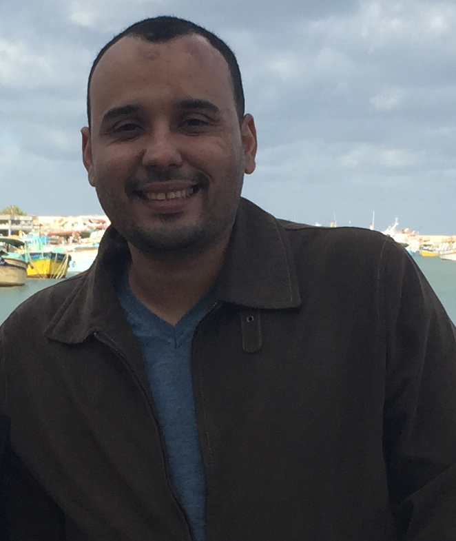

Mohamed Ibrahim Ahmed
|  |
Mohamed Ibrahim is a postdoctoral associate at Carnegie Mellon University working with Prof. Swarun Kumar and Prof. Peter Steenkiste.
He received his PhD in Computer Science from Rutgers University under the supervision of Prof. Marco Gruteser. During his PhD, he was awarded the Doctoral Dissertation Fellowship from the CS Department at Rutgers University and the best paper award from ACM VLCS 2016. His work has been published at premier venues in wireless communications and networks such as MobiCom, MobiSys, INFOCOM. Check out Mohamed's website [here].
|
Can you tell me about your research interests and focus?
I am broadly interested in designing and developing mobile, wireless sensing systems, networking protocols, and applied machine Learning algorithms. My PhD thesis focuses on developing wireless tracking solutions targeting submeter accuracy indoors and meter-level accuracy outdoors by leveraging unconventional wireless signals including visible light and WiFi Fine Time Measurements (FTM). These tracking algorithms can adaptively learn and simultaneously map the environment/anchors while tracking users. My research leverages emerging wireless signals such as WiFi FTM, visible light, acoustic, and capacitive coupling to enable the development of ubiquitous sensing systems targeting energy reduction while introducing novel indoor and outdoor applications.
Can you tell me about your work in CMU?
Currently, I am working on extending the range of RF energy harvesting through multiband excitation signals. I am also working on detecting and tracking wireless incumbents from a much higher distance than their standard communication range. For example, detection and localization of a WiFi access point using multiple receivers residing a kilometer away.
What are the research accomplishments that you are most proud of?
My first accomplishment during the PhD was proposing and building a sensitive system that can track shadows of humans from the ceiling lamps. Sensing variations in visible light at the ceiling reflected and diffused by carpets and rugs was a major challenge. We spent more than a year building this system. Getting the best paper award for this work and publishing it to a top venue verified the appreciation of the research community for solving such challenging problems. My second accomplishment was building a linux tool and evaluating the accuracy of WiFi FTM while there was no documentation about how to extract these measurements and how the ranging protocol works. This is because different wifi chipset vendors have their own implementation of the protocol and these implementations are proprietary. For example, I had to dig into the linux drivers of wireless chipsets to develop such a tool. Evaluating this protocol extensively indoor and outdoor was another challenge especially during the winter break :). Finally, building an accurate vehicle localization system using WiFi FTM and on board odometry sensors was another accomplishment, while evaluating such a system in Manhattan and Detroit was a lot of fun.
Can you share a little known fact about yourself?
love playing and watching sports such as football (soccer in the USA only :)), tennis, basketball, squash and handball. Back in Egypt, I played football in the streets and I was always dreaming of being a professional player. Apart from sports, I like spending my offtime at the beaches with my family.